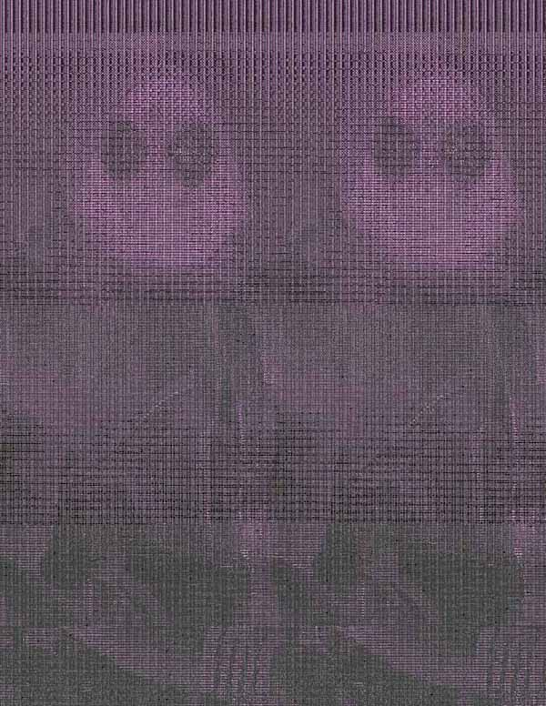

"Exquisite_Corpse_Group.jpg", Digital Composite, 2019
The first glitch piece was altered from Exquisite_Corpse_Group.jpg (Our actual title for the piece, meant to be spoken out loud in its entirety,) was edited using Audacity, mainly using effects associated with meme culture (ie bass boosting, echo and tempo change).

"Final Destination.", Digital Composite, 2019
My group (Team Steven-Josh-Lydia) chose option 2 for our set. As a group, our concept was the "Fictional Storage." There's all these items that exist in fiction, and it's weird that they just exist only in their specific situations? We wanted to ask the question, "Where are these objects when they're not in use?" For my specific piece, I wanted to to ask that question for my favorite video game, Super Smash Bros. There's all these items that randomly spawn in game, seemingly out of nowhere. Competitive players turn the items off, so I gave the items a place to exist: a warehouse where the items aren't used are stored. The title, "Final Destination."
"Half Empty." Digital Video, 2019.
Half Empty. is a film dedicated to capturing motion. It's about the contradiction of rapid stillness, the juxtaposition of prolonged motion, and the permanence of a spill versus the fleeting nature of consumption.
"Olivia Teracash: Teenage Girl Extrodinare." Website, 2019.
Olivia Teracash is a normal girl with a normal life. Just don't leave her blog's homepage! The project itself is a testament to deception on the internet. Olivia Teracash obviously doesn't exist, but it's so easy to fake a blog like hers. Taking advantage of how easy it is to trust a website, we wanted to make the most jarring juxtaposition possible.